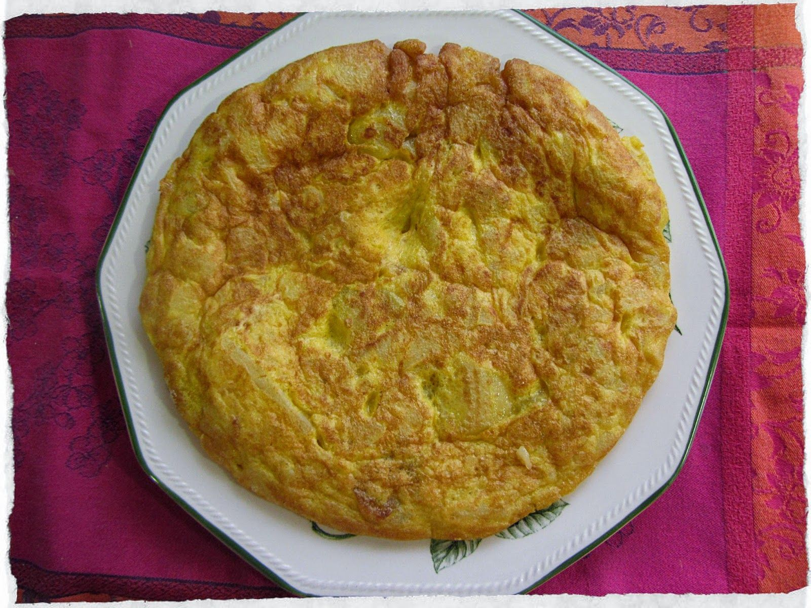

Tortilla de patatas
Descubre la auténtica delicia española con nuestra receta de tortilla de patatas. Nuestra guía paso a paso te llevará a través de los ingredientes, la preparación y la cocción para que puedas disfrutar de esta icónica y sabrosa tortilla en la comodidad de tu hogar. Ya sea para el desayuno, el almuerzo o la cena. ¡Atrévete a cocinar una deliciosa tortilla de patatas hoy mismo!
Ingredientes
5 Huevos
500g de patatas
1 Cebolla
Sal
Comino
Aceite de oliva

Preparación
- Pelamos y lavamos las patatas, las cortamos en rodajas finas al igual que la cebolla si la queremos añadir.
- Ponemos en una sartén y cubrimos de aceite de oliva virgen extra.
- Dejamos que se pochen a fuego medio-suave hasta que comiencen a dorarse. Sabréis que las patatas están hechas cuando comiencen a romperse, con la paleta. Para que la tortilla esté jugosa es importante que las patatas se hagan bien y se confiten, porque no hay nada peor que una tortilla con las patatas medio crudas. Por lo tanto, paciencia con este paso.
- Las sacamos de la sartén y escurrimos bien. Ponemos en un cuenco grande.
- Aparte batimos los huevos y los añadimos a las patatas y a la cebolla, añadimos un poco de sal y mezclamos.
- Dejamos un par de minutos que se mezclen bien.
- Ponemos en la sartén un par de cucharadas de aceite de oliva virgen extra y vertemos todo.
- Al principio rompemos un poco, como si fuéramos a hacer un revuelto, luego vamos dándole forma por los bordes.
- Cuando veamos que ya está cuajada por abajo ponemos un plato o una tapa encima de la sartén y le damos la vuelta rápidamente.
- Ponemos de nuevo la sartén en el fuego y deslizamos la tortilla desde el plato a la sartén.
- Dejamos unos minutos más mientras redondeamos los bordes con la espátula (2 o 3 si te gusta más cuajada, menos si te gusta jugosa) para que se termine de hacer y ya tenemos lista nuestra tortilla de patatas.
Informacion nutricional
- Tamaño de la Porción 100g
- Energía 527Kj 6%
- Grasa 6,93g 10%
- Carbohidratos 9,26g 4%
- Azúcar 2,15g 2%
- Proteína 6,63g 13%
- Sal 0,32g 5%
- Colesterol 179mg
- Potasio 215mg